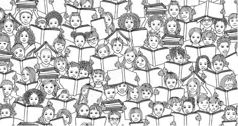

Primer grado. Un aula completa con niños de entre seis y siete años. El que camina por los pasillos puede oír el barullo proveniente de aquellos bajitos inquietos y elocuentes. La señorita ingresa al aula  y la recibe una bocanada de aire caliente que concentra la transpiración despedida por los niños, debajo de sus capas de uniforme prolijas e incómodas. La primera reacción es encender el ventilador de techo y abrir una ventana. Se oye a algunas niñas refunfuñar por lo bajo que ellas tienen frío y no demorarán en comenzar a estornudar. La señorita hace caso omiso de lo que oye, considera en este caso la prioridad de mantener el ambiente aireado.
Son un grupo con chispa, niños obedientes y en su mayoría curiosos. Ávidos de experiencias nuevas y
reveladoras. Como todo niño de esa edad, sus movimientos son inocentes, descuidados, algo torpes;
parecidos a los que traen de preescolar.  Su
mirada es inquisidora y expectante. Hay algunos
extrovertidos y con admirable autoconfianza. Hay otros tímidos y reservados, de acotaciones y preguntas
memorables, ocurrentes y singularmente cómicas. Son niños parados en el inicio de un tablero que
comprende el juego de la educación académica. Son arcilla lista para moldear. Cada uno avanzará los
casilleros a su paso, procurando no perder nunca un buen ritmo.
Su
mirada es inquisidora y expectante. Hay algunos
extrovertidos y con admirable autoconfianza. Hay otros tímidos y reservados, de acotaciones y preguntas
memorables, ocurrentes y singularmente cómicas. Son niños parados en el inicio de un tablero que
comprende el juego de la educación académica. Son arcilla lista para moldear. Cada uno avanzará los
casilleros a su paso, procurando no perder nunca un buen ritmo.  Se llevan miles de impresiones por
minuto en cuanto perciben a su alrededor. Por parte de los adultos, por parte de sus pares, por parte
del mundo que los rodea. Aplausos, reprimendas, caricias, felicitaciones, ceños fruncidos, muecas de
asentimiento, expresiones de ternura, lamentos, silencios que hablan, silencios que reprueban, silencios
de resignación, risas viscerales, miradas y oídos atentos a ellos. Miradas atentas a ellos y oídos
aparentemente no tanto. Todo lo perciben aquellas esponjas humanas escrutadoras. No pasan por alto ni un
detalle. Son sensibles, vulnerables, frágiles. Es deber de los adultos dirigirnos a ellos con respeto,
cuidando de elegir bien las palabras, los modos, las lecciones. Apenas está comenzando su proceso de
construcción intelectual, de absorción de saberes útiles para defenderse en el mañana.
Se llevan miles de impresiones por
minuto en cuanto perciben a su alrededor. Por parte de los adultos, por parte de sus pares, por parte
del mundo que los rodea. Aplausos, reprimendas, caricias, felicitaciones, ceños fruncidos, muecas de
asentimiento, expresiones de ternura, lamentos, silencios que hablan, silencios que reprueban, silencios
de resignación, risas viscerales, miradas y oídos atentos a ellos. Miradas atentas a ellos y oídos
aparentemente no tanto. Todo lo perciben aquellas esponjas humanas escrutadoras. No pasan por alto ni un
detalle. Son sensibles, vulnerables, frágiles. Es deber de los adultos dirigirnos a ellos con respeto,
cuidando de elegir bien las palabras, los modos, las lecciones. Apenas está comenzando su proceso de
construcción intelectual, de absorción de saberes útiles para defenderse en el mañana.
Emilio se sienta desde comienzo de año en la tercera fila de bancos, en uno de los extremos, del lado de la pared. Tiene una pena mayúscula que encierra en su pecho y le quita el sueño hace meses. Se abstiene de contarle a su madre porque teme que ella vaya enseguida a tomar una medida de resolución a su conflicto. No lo comparte con sus compañeros porque quizás usen aquella información en su contra y él se transforme en un blanco de quién sabe qué cosas oscuras u hostiles. Le preocupa no tener un momento para contarle de su aflicción a la señorita, su única opción viable para encontrar salida a su tormento.
Emilio aguanta la necesidad de soltar el martirio que no le permite prestar atención en clase, ni hacer
 los deberes con eficiencia en su casa, ni disfrutar de su plato favorito a la hora de cenar. Aguanta
porque lo aterra el mundo infinito de trágicas posibilidades que lo espera al otro lado de su
enunciación. Pero siente que no logrará aguantar durante mucho tiempo más. Emilio se encuentra pronto a
librarse de su desdicha, que no lo deja transitar sus siete años como son dignos de ser vividos: a salvo
de amenazas y preocupaciones.
los deberes con eficiencia en su casa, ni disfrutar de su plato favorito a la hora de cenar. Aguanta
porque lo aterra el mundo infinito de trágicas posibilidades que lo espera al otro lado de su
enunciación. Pero siente que no logrará aguantar durante mucho tiempo más. Emilio se encuentra pronto a
librarse de su desdicha, que no lo deja transitar sus siete años como son dignos de ser vividos: a salvo
de amenazas y preocupaciones.
Comienzan a amanecer los primeros signos de la primavera en el calendario, en los árboles, y en las reacciones alérgicas de unos cuantos. El niño lleva incontables meses ocultando su incertidumbre, hasta que decide, o mejor dicho intuye, que será mejor arriesgarse a empeorar sus circunstancias, antes que perpetuar la agonía de guardarse para sí mismo aquello que carcome su existencia.
Sin pensarlo dos veces para asegurarse de no echarse atrás, Emilio inspira profundo.  Hincha de aire su
pecho y se dirige con paso seguro y ligero al colegio, donde su mamá lo despide, como siempre, con un
sentido beso en la mejilla y un “portate bien, te amo”. El niño esperará al recreo para el momento de su
concreción.
Hincha de aire su
pecho y se dirige con paso seguro y ligero al colegio, donde su mamá lo despide, como siempre, con un
sentido beso en la mejilla y un “portate bien, te amo”. El niño esperará al recreo para el momento de su
concreción.
La hora de matemáticas pareció durar un día entero, pero finalmente el timbre de recreo suena. Los nervios le hacen temblar las piernas, pero no piensa dar ni un paso atrás. Siente que está por cometer un suicidio moral, aunque no sepa qué significa, pero lo escuchó en la tele y le parece que aplica correctamente para su iniciativa. Camina decidido hacia su compañera que se sienta justo enfrente, la de las largas trencitas rubias. Cuando se detiene junto a ella y le toca el hombro con el dedo índice para que se de vuelta, repentinamente las piernas no le tiemblan más. Sin más, con mirada seria y confiada, le inquiere: “¿Querés ser mi novia?”.